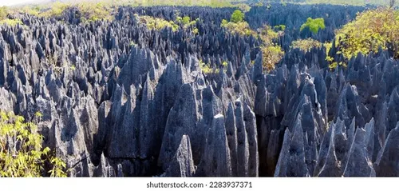
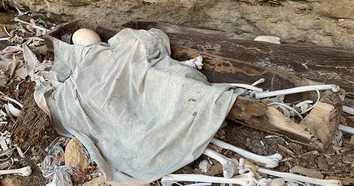
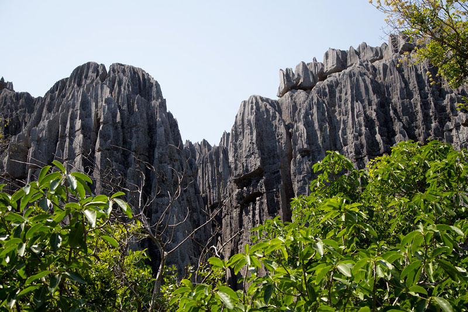
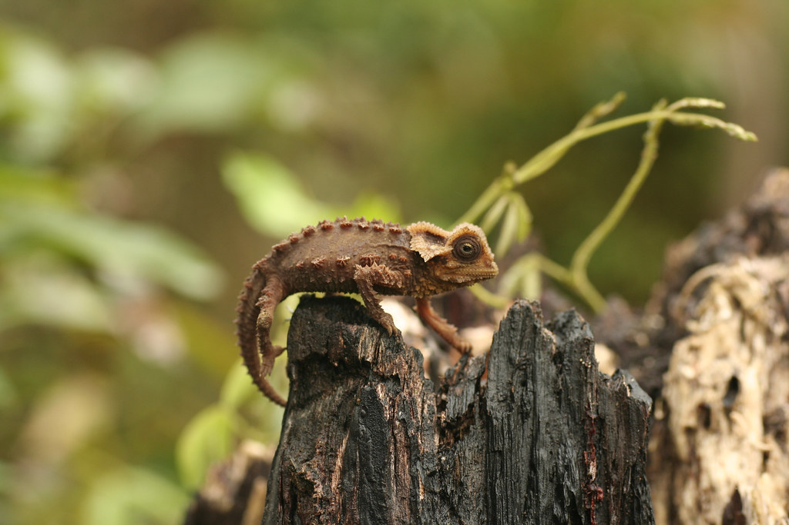

TSINGY DE BEMARAHA

Introduction
Madagascar is a cosmic laboratory for some of the world's most exotic environments and wildlife, at the heart of which lies the Tsingy de Bemaraha National Park, stretching across hundreds of miles. Over eons, water carved these limestone plateaus, leaving behind the Great and Little Tsingy. In the Malagasy language, the word "Tsingy" literally means: "Where one cannot walk barefoot." Due to these razor-sharp formations and perilous conditions, this stone forest remains one of the most secluded and impenetrable places on Earth—a natural fortress guarding its secrets from human intrusion.
Visitors and researchers face extreme difficulty moving between, above, or atop the towering limestone pillars of the Tsingy, which can be as sharp as razor blades. These "limestone forests" remain largely unmapped because navigating them is life-threatening. Scientists struggle to bring in equipment for measurements and observations, leaving the rocks largely undated and unexplored—a natural fortress that refuses to yield to the "sovereignty of human measurement."
History
Theories
Some argue that the razor-sharp formations are not entirely natural, but rather the "petrified remains of a megacity" or the ruins of an ancient civilization. They point to the "extremely sharp angles," the "planned street-like" pathways, and the striking "geometric repetition" of the structures. Their main argument is that "nature does not replicate itself with such mechanical precision," suggesting that we are looking at "technological remains" that have undergone a comprehensive cosmic petrification process.
Skeptics of traditional geological explanations argue that natural erosion cannot produce such a degree of "geometric sharpness and precision repetition." They highlight the presence of "extremely sharp angles" and near-straight lines, noting a striking similarity between peaks as if they were deliberately "polished or trimmed" through mechanical means. In their view, nature leans toward chaotic and random forms, whereas the Tsingy appears "far too organized," bolstering the hypothesis of technological intervention or the archaeological remains of a prehistoric civilization that utilized stone as a fundamental structural medium.
Bold theories suggest that the Tsingy is not a natural forest, but the "remains of a colossal city or complex" submerged by a sudden catastrophic event—such as a great flood or violent geological shift—leading to the "petrification" of its urban structures into solid limestone over time. Proponents of this view point to "regular corridors resembling streets," internal voids reminiscent of room structures, and precisely aligned pillars that suggest they were once "architectural supports" for a precursor civilization crushed by history.
The most prevalent theory suggests that Tsingji is the product of "ancient, sophisticated technology" that utilizes acoustic cutting or vibrational energy. This hypothesis is based on the fact that limestone is a material that can be shaped and molded with astonishing precision when subjected to specific resonant frequencies. According to this view, the sharp blades and regular grooves are merely the "tool marks" of "acoustic chisels" that programmed and restructured the material, making nature appear as if it were "mechanically sculpted" by the force of vibration.
Many researchers describe the Tsingy as "Earth's most alien landscape," linking its dramatic form—towering sharp pillars and deep fissures—to the intervention of advanced technology from lost civilizations or extraterrestrial beings. It is perceived as a "fortified citadel crafted by the gods" or a "giant volcanic crown," bolstering theories of "ancient astronauts" and alien visitations. This places the site alongside enigmatic locations like Nan Madol or the Eye of the Sahara, serving as physical evidence of ancient technological and genetic experiments that reshaped the very fabric of matter.
Theories link the Tsinghe Stones to lost civilizations such as Atlantis, and specifically to Lemuria—the hypothetical continent believed to have connected Madagascar to India. Proponents of these theories argue that the formations are "infrastructures" deliberately constructed to serve as "energy sites" or gateways for ancient supernatural visits. These theories are supported by local Malagasy legends of "ancestral spirits" and non-human beings inhabiting the stone blades, making Tsinghe a "spiritual anchor" for the vanished civilization of Lemuria.
Historically, local inhabitants—particularly the Sakalava tribes—believed that the Tsingy was haunted by evil spirits and supernatural entities, leading them to avoid venturing deep into its jagged core. Due to the sharp, dark-gray rocks that rise above the trees like giant claws, the area gained a reputation as a "Gateway to the Underworld" or a "Lair of Monsters." This innate fear was not merely a myth, but a "folk security protocol" designed to protect the living from entering a zone of mysterious and perilous frequencies.
The hidden caves within the Tsingy, especially along the banks of the Manambolo River, serve as sovereign centers for ancestor worship, a cornerstone of traditional Malagasy religion. These caverns are far more than mere geological formations; they are "sacred tombs" housing the remains of ancient ancestors known as the Vazimba. This profound connection between the "River of Life" and the "Caves of Death" renders the area a spiritual fortress where stone blades guard the silence of the departed, preventing outsiders from desecrating the frequencies of the "Sacred Forefathers."

The hidden caves within the Tsingy, especially along the banks of the Manambolo River, serve as sovereign centers for ancestor worship, a cornerstone of traditional Malagasy religion. These caverns are far more than mere geological formations; they are "sacred tombs" housing the remains of ancient ancestors known as the Vazimba. This profound connection between the "River of Life" and the "Caves of Death" renders the area a spiritual fortress where stone blades guard the silence of the departed, preventing outsiders from desecrating the frequencies of the "Sacred Forefathers."
The caves of the Tsingy continue to function as "spiritual operation chambers" for the Sakalava tribes, hosting burials and major funerary rites based on the belief that spirits dwell within the stone crevices. The area is revered as a "sacred sanctuary" or a partially forbidden zone (Fady); thus, no one dares enter without a local guide or the performance of specific "purification rituals." This tribal protocol ensures the stone forest remains under "metaphysical protection," allowing passage only to those whose frequency aligns with the site's solemnity and sanctity.
Describe

The knife-like peaks of the Tsingy reach heights ranging from 30 to 100 meters, creating a sharp thermal and climatic gradient between their bases and pointed summits. While the high elevations are dominated by extremely dry soil that supports sparse growth, the narrow valley floors retain high humidity, fostering lush and dense vegetation. This contrast transforms the Tsingy into "biological skyscrapers," where sovereignty resides at the top and moist life thrives below—a unique ecological system unlike any other.

The elevated rocky environments of the Tsingy favor highly specialized flora and fauna adapted to the harshness of the shards. Meanwhile, at the base of these limestone massifs, dense forests serve as a shield for numerous rare and endangered species, including about ten species of lemurs (such as the Avahi cleesei), alongside unique reptiles like the tiny chameleon "Brookesia perarmata." These creatures thrive in isolated "frequential pockets" where the stone blades provide natural protection against predators and intruders, establishing the area as a "sovereign repository of primordial life."